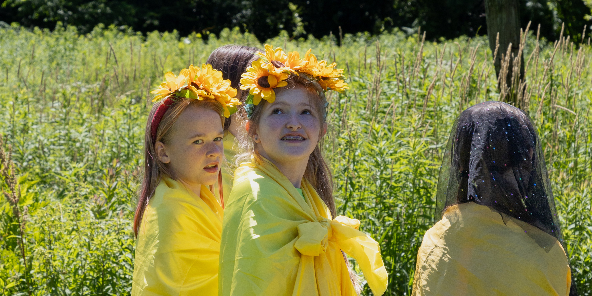
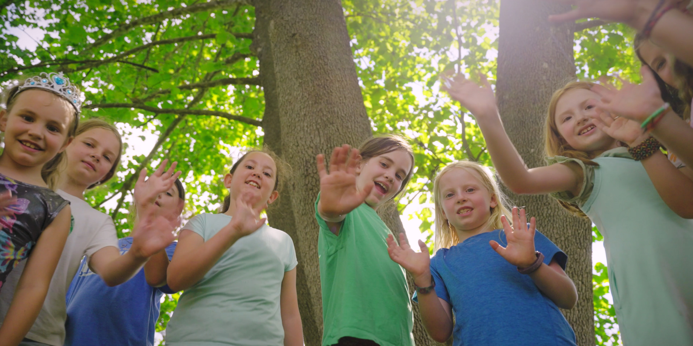

Journey Camp is a treasured place for young people who want time to make their own
choices, enjoy making new friends where everyone is valued, and really like playing in the
woods.
We offer a program of friendship and mentorship that has empowered girls and non-binary
youth for over 30 years. Our large staff of teen leaders, junior staff, college age, and adults
provide individualized support as they teach how to care for yourself and care for each other.

Journey Camp 2026
Monday, June 22 - Friday, June 26
9:00 AM to 4:00 PM
Campers ages 7-11 (some 6's)
Teen Leaders ages 11-15
Scholarships available!
Registration opens December 1st.

Fall Fundraiser
Help us reach our goal of raising $7,000 by November 30th.
Journey Camp is a treasured place for young people who want time to
make their
own
choices, enjoy making new friends where everyone is valued, and really like playing
in the
woods.
We offer a program of friendship and mentorship that has empowered girls and
non-binary
youth for over 30 years. Our large staff of teen leaders, junior staff, college age,
and adults
provide individualized support as they teach how to care for yourself and care for
each other.
Our Program
Each day we build stick houses on the Pocumtuck Ridge, play games, sing, tell stories,
and learn
how to talk things out. Workshop choices include art, dance hikes, writing, and
story-building.
From the start we make sure everyone feels included so there is a solid feeling of
belonging and
social safety.
How to Reach Us
Administrator: Danielle Denenfeld —
danielled.journey@gmail.com (413) 218-6506
Founder and Director: Sarah Pirtle — sarahpirtle@gmail.com (413) 625-2355
Location
Journey Camp is held at the Wollman Hill Conference Center, off route 5-10 in
North Deerfield, in Franklin County, Western Massachusetts.